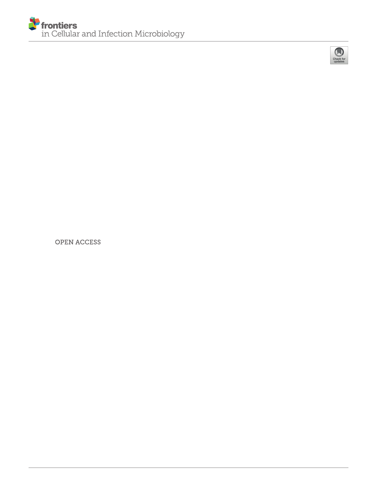

Fernando Oliveira 1, Holger Rohde 2, Manuel Vilanova 3,4,5 and Nuno Cerca 1*
1 Centre of Biological Engineering, Laboratory of Research in Biofilms Rosa´ rio Oliveira (LIBRO), University of Minho, Braga,
Portugal, 2 Institut für Medizinische Mikrobiologie, Virologie und Hygiene, Universitätsklinikum Hamburg-Eppendorf,
Hamburg, Germany, 3 Instituto de Investigac¸ão e Inovac¸ão em Sau´ de (i3S), Universidade do Porto, Porto, Portugal,
4 Instituto de Biologia Molecular e Celular (IBMC), Universidade do Porto, Porto, Portugal, 5 Instituto de Cieˆ ncias Biome´ dicas
de Abel Salazar, Universidade do Porto (ICBAS-UP), Porto, Portugal
Edited by:
Brendan Gilmore,
Queen’s University Belfast,
United Kingdom
Reviewed by:
Pietro Speziale,
University of Pavia, Italy
Christian Johann Lerche,
Rigshospitalet, Denmark
*Correspondence:
Nuno Cerca
Specialty section:
This article was submitted to
Biofilms,
a section of the journal
Frontiers in Cellular and
Infection Microbiology
Received: 20 October 2021
Accepted: 11 November 2021
Published: 30 November 2021
Citation:
Oliveira F, Rohde H, Vilanova M and
Cerca N (2021) Fighting
Staphylococcus epidermidis Biofilm-
Associated Infections: Can
Iron Be the Key to Success?
Front. Cell. Infect. Microbiol. 11:798563.
Staphylococcus epidermidis is one of the most important commensal microorganisms of
human skin and mucosae. However, this bacterial species is also the cause of severe
infections in immunocompromised patients, specially associated with the utilization of
indwelling medical devices, that often serve as a scaffold for biofilm formation. S.
epidermidis strains are often multidrug resistant and its association with biofilm
formation makes these infections hard to treat. Their remarkable ability to form biofilms
is widely regarded as its major pathogenic determinant. Although a significant amount of
knowledge on its biofilm formation mechanisms has been achieved, we still do not
understand how the species survives when exposed to the host harsh environment during
invasion. A previous RNA-seq study highlighted that iron-metabolism associated genes
were the most up-regulated bacterial genes upon contact with human blood, which
suggested that iron acquisition plays an important role in S. epidermidis biofilm
development and escape from the host innate immune system. In this perspective
article, we review the available literature on the role of iron metabolism on S.
epidermidis pathogenesis and propose that exploiting its dependence on iron could be
pursued as a viable therapeutic alternative.
Keywords: iron acquisition systems, regulation of iron acquisition, Siderophores, S. epidermidis biofilms, role of
iron in infection
INTRODUCTION
Health care-associated infections (HAIs) are a significant cause of morbidity and mortality
worldwide and represent an increasing problem in modern medicine (Haque et al., 2018). More
than 4 million patients are affected by HAIs every year in Europe, with an average prevalence rate of
7.1%, which accounts for an annual cost of approximately 7 billion (Allegranzi et al., 2011; European
Centre for Disease Prevention and Control, 2018). In developing countries, the estimated prevalence
rates of HAIs are even higher, ranging from 5.7% to 19.1% (pooled prevalence rate of 10.1%) (Pittet
et al., 2008; Allegranzi et al., 2011). Patients admitted to intensive care units are particularly
susceptible to these infections, not only due to their immunocompromised status, but also due to the
1